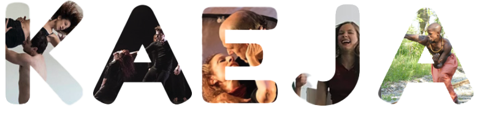
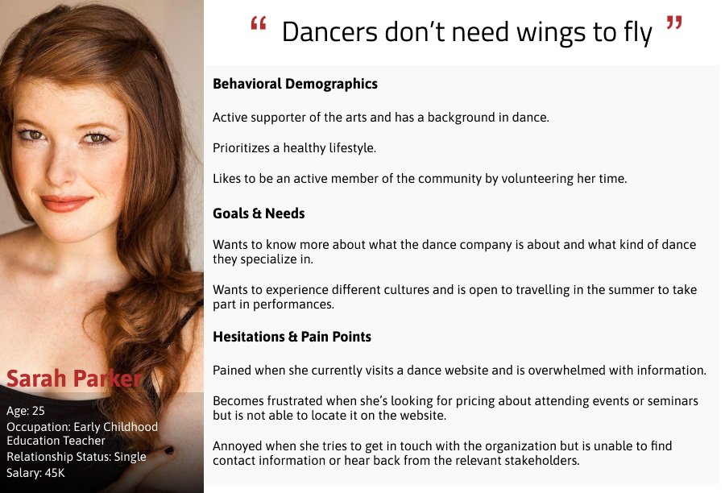

Brand
Project
Summary
I was part of a team responsible for
redesigning the Kaeja d'Dance website.
Our goal was to make the interface more
appealing to its many user groups.
Responsibilities
"Dance is the hidden language of the soul"
- Martha Graham
Kaeja d’Dance is a non-profit organization that has created award-winning contemporary dance performances for stage, film, and communities for over 30 years. Whether you’re a dance enthusiast looking to get started or a seasoned veteran seeking a challenge, Kaeja makes dance inclusive for all.
Through conversations with our target audience, we were able to determine what their expectations were when visiting a dance website. As we reviewed our notes, it became evident that the current Kaeja website wasn’t meeting its users’ expectations. It lacked a clear message as to the purpose of the organization, resulting in difficulty in users being able to access key information.
The site also lacked any sort of visual branding that one would expect when visiting a website of this nature; it was neither dramatic nor elegant.
Thus, we were left wondering, how might we improve the interface and information architecture of the site in order to inspire dance enthusiasts to spread their passion for dance to others?
We saw Kaeja as more than just a dance company. Their community involvement and mission to make dance accessible to all resonates with countless individuals - many of whom have no previous dance experience. Due to time constraints, I focused on designing a specific user journey which led to an event called “Porch View Dancing (PVD),” identified through our interviews as Kaeja’s most popular event.
